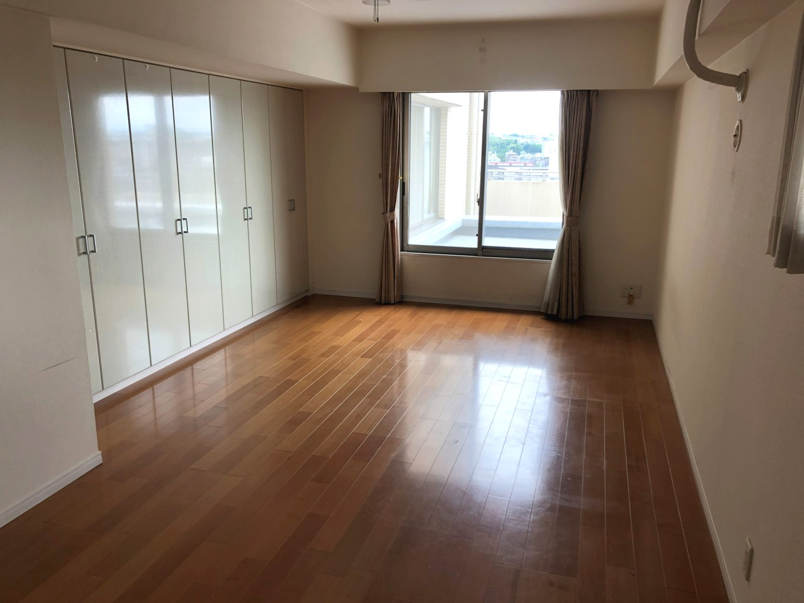
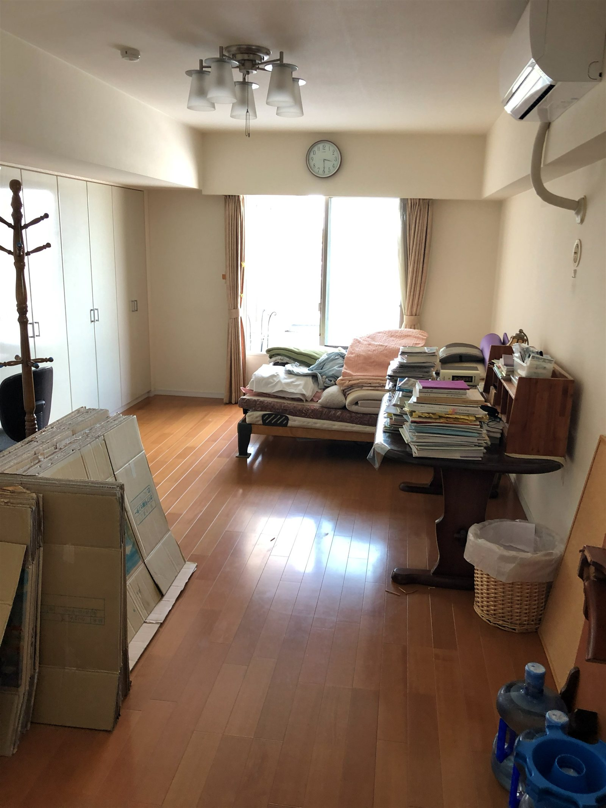
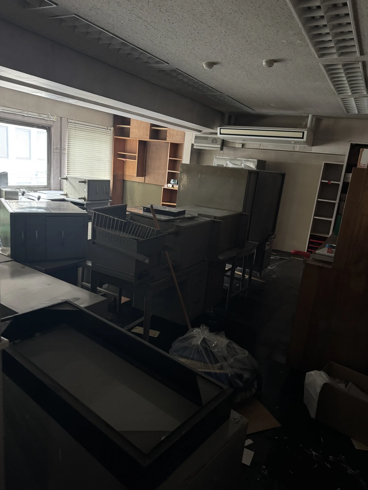
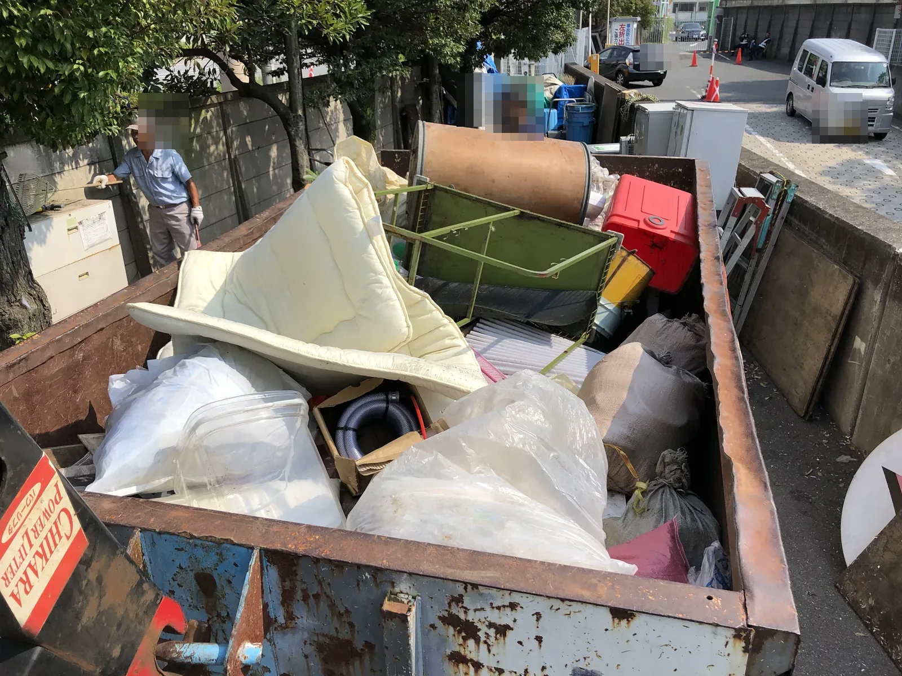
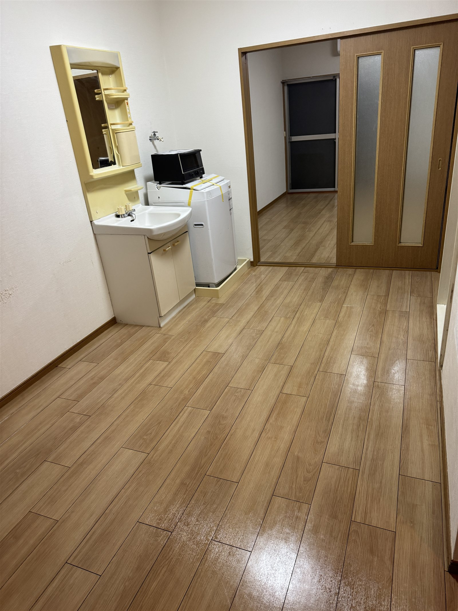

PROPERTY CLEARANCE不動産会社・管理会社向け 残置物撤去
退去後・売却前・相続物件・空き家の残置物撤去を、現場写真からご相談いただけます。
家具、家電、日用品が混在した状態でも、まずは現場写真をお送りください。物量や搬出条件を確認し、概算と進め方をご案内します。
受付 9:00〜18:00・日曜定休｜0120-007-368

ISSUES

アートさくらは、分別前の混在した状態から相談できる有料回収サービスです。現場写真から概算をご案内し、正式な金額は物量と搬出条件を確認したうえでお伝えします。
SCOPE
分別・搬出・積み込み・有料回収まで、現場の状態に合わせてご相談いただけます。
上記に記載のない作業は、本ページではご案内していません。対応範囲はお問い合わせ時にご確認ください。
PROPERTY TYPES
店舗、事務所、倉庫、テナントは住居系の間取り別料金の対象外です。物量と搬出条件を確認し、個別にお見積もりします。
BEFORE / AFTER
実際の作業前後の写真です。特定の取引事例ではなく、作業内容の一例としてご覧ください。





ESTIMATE
オーナー様への確認や社内稟議に進みやすいよう、現場写真から概算をご案内します。正式な金額は、物量や仕分け量、搬出条件を確認したうえでお伝えします。
1R・1Kの20,000円〜は、物量が少なく、搬出条件が良い場合の目安です。正式な金額は写真または現地確認後にご案内します。
掲載している料金は、条件の良い場合を含む目安です。記載金額での作業をお約束するものではありません。正式な金額は、現場写真または現地確認後にご案内します。
REASONS
都筑区の拠点から、横浜市内の物件へ伺います。
現地へ行く回数を抑えながら、概算と進め方を確認できます。
家具、家電、日用品が混在したままの状態で構いません。
階段やエレベーターなどの搬出条件も、写真と現地で確認します。
見積内容に変更が生じる場合は、作業開始前にご説明します。
本ページの作業例は、すべて実際の現場写真です。
予約状況に空きがあれば、即日または翌日の対応も検討します。希望日をお知らせください。
WORKFLOW
物件の種類と状況をお知らせください。
室内が分かる写真を数枚お送りください。
物量と搬出条件を確認し、概算をご案内します。
写真で判断しづらい現場は、現地で確認します。
作業内容と金額の内訳をご説明します。
ご確認後のお返事で大丈夫です。
募集・売却・引き渡しの予定に合わせて調整します。
正式見積もりの内容に沿って作業します。

AREA
都筑区の拠点から、横浜市全18区の物件に対応します。
横浜市外の物件も、場所や物量により対応を検討します。事前にご相談ください。
受付 9:00〜18:00・日曜定休
FAQ
はい。現場写真と物件情報から概算をご案内します。正式な金額は、物量や仕分け量、搬出条件を確認したうえでお伝えします。
はい。分別前の混在した状態からご相談いただけます。現状のまま写真をお送りください。
はい。家具、家電、日用品が混在した状態でも、写真から物量と搬出条件を確認してご案内します。
予約状況に空きがあれば、即日または翌日の対応も検討します。希望日をお知らせください。
物量や搬出条件が見積もり時の内容と異なる場合は、料金が変わることがあります。見積内容に変更が生じる場合は、作業開始前にご説明します。
いいえ。間取り別料金は住居系物件の目安です。店舗、事務所、倉庫、テナントは、物量と搬出条件を確認したうえで個別にお見積もりします。
品目や状態によって対応が異なるため、回収をお約束するものではありませんが、まずは写真でご相談ください。確認のうえ、対応の可否をご案内します。
場所や物量により対応を検討します。事前にご相談ください。
日曜日は定休日です。月曜日から土曜日の9:00〜18:00に受け付けています。
本サービスでは買取を行わず、有料回収としてご案内しています。
COMPANY
| 会社名 | 株式会社アートさくら 神奈川本社 |
|---|---|
| 所在地 | 〒224-0053 神奈川県横浜市都筑区池辺町1183-4 |
| 電話番号 | 0120-007-368 |
| 受付時間 | 9:00〜18:00・日曜定休 |
| メール | y.artsakura@gmail.com |
| LINE | LINEで相談する |
| 古物商許可証番号 | 451930009599号 |

QRコードからLINEで
現場写真をお送りいただけます
READY FOR NEXT
物件の種類、残っている品目、おおよその量、希望日が分かる範囲で構いません。写真によるご相談と概算見積もりは無料です。
受付 9:00〜18:00・日曜定休｜0120-007-368
